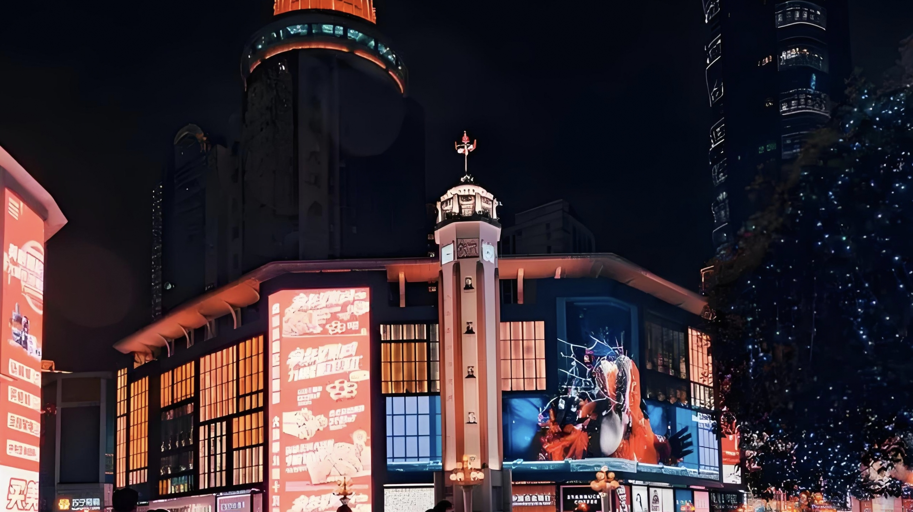
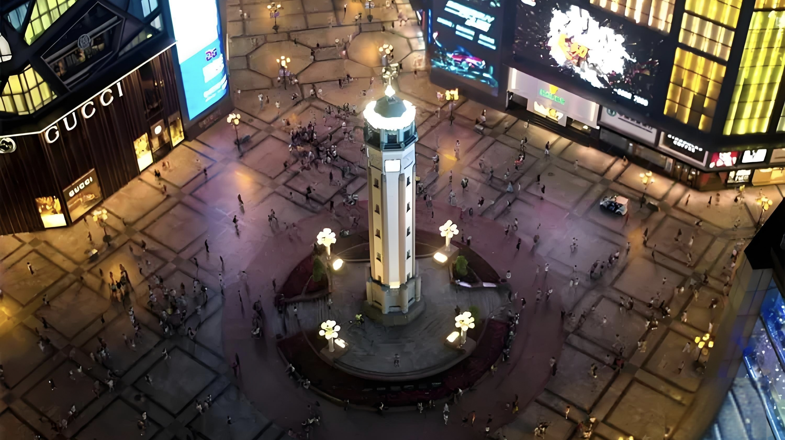

解放碑
重庆解放碑位于中国重庆市渝中区，是该市的标志性建筑之一，也是中国解放战争的纪念地之一。建于1945年的解放碑高27.5米，是一座巨大的石雕纪念碑，以纪念中国人民抗日战争的胜利和重庆在解放战争中的贡献。
解放碑的设计灵感来自于古代的丰碑，整个建筑以巨大的纪念碑为主体，碑身上刻有各种雕塑和浮雕，寓意着抗日战争的胜利和人民解放的重要意义。碑底还有一座广场，是人们集会纪念的场所。
解放碑广场周围是重庆市的商业中心，有许多购物中心、酒店、餐厅和娱乐场所。解放碑附近还有许多历史文化名胜，如洪崖洞、长江索道等，游客可以在解放碑附近感受到浓厚的历史文化氛围。解放碑下方的崖壁上，就是有着悠久历史的老街区：洪崖洞。这里有传统的巴渝建筑风格，街道两旁有各种小吃摊和特色商店，游客可以品尝重庆的美食，购买纪念品。
解放碑步行街是重庆市的商业中心之一，有各种大型购物中心、百货公司、品牌专卖店等，是购物和休闲的好去处。
重庆解放碑是一座具有重要历史意义的纪念碑，也是重庆市的标志性景点之一。游客在解放碑周边可以感受到重庆的历史文化底蕴，并欣赏到美丽的城市风景。同时，附近还有许多其他景点和活动，使游客能够全面体验重庆的魅力。